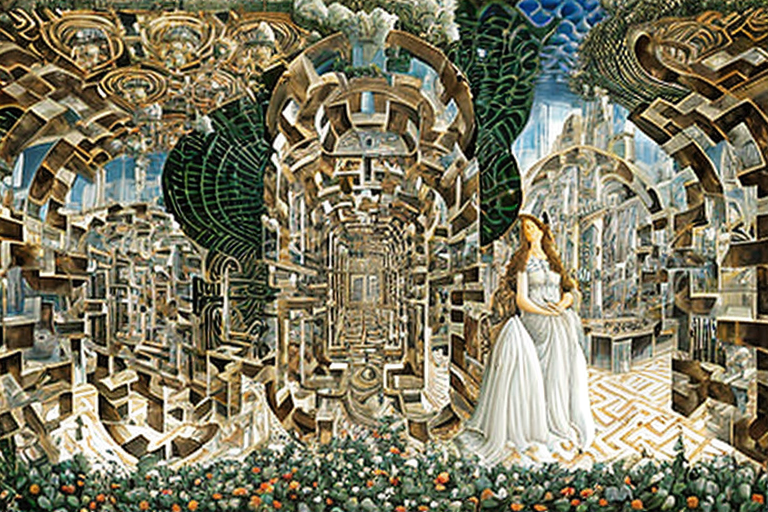
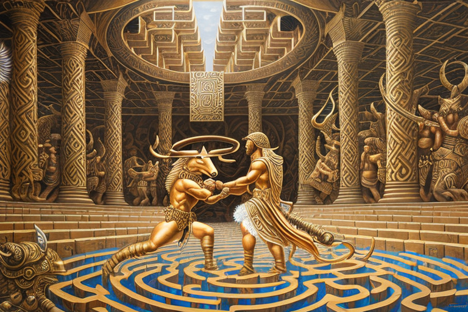

Ο Μινώταυρος και ο κερδοφόρος λαβύρινθος
Αρχική Σελίδα
Πίνακας Περιεχομένων
Η καθημερινότητα του τέρατος

Ο Μινώταυρος, ήταν ένα πραγματικό θηρίο, μισός άνθρωπος, μισός ταύρος, με φλογερό και οξύθυμο χαρακτήρα. Ζούσε σε αυτόν τον λαβύρινθο, χτισμένο από έναν ιδιοφυή αρχιτέκτονα που πιθανότατα ήταν φαγωμένος και ποτισμένος με αμβροσία όταν του ήρθε το σχέδιο.
Τώρα, αυτός ο λαβύρινθος ήταν το κάτι άλλο. Ήταν τεράστιος, περίπλοκος και γεμάτος ανατροπές που θα μπέρδευαν ακόμα και τον πιο ικανό πλοηγό. Ο Μινώταυρος, τον ήξερε απʼ έξω σαν την τσέπη του. Ζούσε εκεί εδώ και χρόνια, εξελίσσοντας τις δεξιότητές του και δυναμώνοντας μέρα με τη μέρα.
Υπήρχε όμως ένα πρόβλημα. Η διατήρηση του λαβύρινθου δεν ήταν φθηνή. Χρειάζοταν συνεχή συντήρηση, με τοίχους που πάντα γκρεμίζονταν και συντρίμμια παραπεταμένα στα μονοπάτια που έπρεπε να καθαριστούν. Και εκεί έπαιζε καθοριστικό παράγοντα ο Μινώταυρος.
Πλήρωνε για την ακριβή υποδομή του λαβύρινθου βλέποντας διαφημίσεις στους τοίχους. Κάθε φορά που περιτριγύριζε στο λαβύρινθο, συναντούσε πινακίδες και αφίσες που διαφήμιζαν κάθε λογής προϊόντα, από άρματα μέχρι κρασί και όπλα.
Η τιμή της μονοτονίας

Αυτό το θηρίο μπορεί να ήταν πανίσχυρο, είχε όμως κάποια ελαττώματά. Βλέπετε, ο Μινώταυρος δεν επισκέπτοταν ποτέ τις μη δημοφιλείς γωνιές του λαβυρίνθου.
Οι μή δημοφιλείς γωνίες ήταν γεμάτες συντρίμμια, στοιβαγμένες σαν βουνό σκουπιδιών. Ο Μινώταυρος δεν έμπαινε στον κόπο να τα καθαρίσει και έτσι απέφευγε αυτές τις περιοχές εντελώς.
Αλλά αυτές οι μη δημοφιλείς γωνιές του λαβύρινθου ήταν πρόβλημα για το διαφημιστικό μοντέλο που κρατούσε τον λαβύρινθο σε λειτουργία. Δεν έβλεπαν πολλά μάτια τις διαφημίσεις εκεί, πράγμα που μείωνε τα έσοδα από αυτές τις περιοχές.
Ωστόσο, ο Μινώταυρος ήταν ένας έξυπνο θηρίο και ήξερε ότι έπρεπε να βρει έναν τρόπο να κάνει αυτές τις μη δημοφιλείς γωνιές κερδοφόρες. Έστρωσε λοιπόν ένα σχέδιο, ένα σχέδιο που απαιτούσε τη βοήθεια του αρχιτέκτονα που είχε σχεδιάσει τον λαβύρινθο.
Πλησίασε τον αρχιτέκτονα και πρότεινε μια νέα ιδέα, ένα σύστημα καθρεφτών που θα αντανακλά τις διαφημίσεις από τις μη δημοφιλείς γωνιές του λαβύρινθου στις δημοφιλείς γωνιές. Ο αρχιτέκτονας ήταν διστακτικός στην αρχή, αλλά ο Μινώταυρος ήταν πολύ πειστικός και τελικά συμφώνησε με το σχέδιο.
Και έτσι εγκαταστάθηκαν οι καθρέφτες και οι διαφημίσεις από τις μη δημοφιλείς γωνιές του λαβυρίνθου οι οποίες αντανακλώνονταν στις δημοφιλείς γωνιές. Τα έσοδα από τις περιοχές αυτές άρχισαν να ανεβαίνουν και ο Μινώταυρος ήταν πανευτυχής.
Αλλά η χαρά του δεν ήταν μακρά, όταν σύντομα συνειδητοποίησε ότι το σχέδιό του είχε ένα ελλάτωμα. Οι διαφημίσεις αντικατοπτρίζονταν πλέον σε κάθε γωνιά του λαβυρίνθου, ακόμα και στα μέρη που σύχναζε ο Μινώταυρος. Και άρχισε να βλέπει τις ίδιες διαφημίσεις ξανά και ξανά, κάθε μέρα τις ίδιες.
Ο Μινώταυρος απογοητεύτηκε, βαριόταν και λαχταρούσε κάτι νέο και συναρπαστικό.
Παραβίαση της ιδιωτικότητας

Εκεί λοιπόν ο Μινώταυρος, καθώς ασχολούταν με τη δουλειά του, προσπαθώντας να περιηγηθεί στον λαβύρινθο και να συγκεντρώσει μερικές δραχμές απο τις διαφημίσεις, όταν ξαφνικά αρχίζει να βλέπει την ίδια καταραμένη διαφήμιση για ελαιόλαδο κάθε δύο βήματα. Και δεν μπορούσε να ξεφύγει, όσο κι αν προσπαθούσε. Ήταν σαν να τον καταδίωκε αυτό το παράξενο μπουκάλι ελαιόλαδο.
Και μετά συνέβη κάτι χειρότερο. Ο Μινώταυρος άρχισε να παρατηρεί ότι οι καθρέφτες ήταν γωνιασμένοι με τέτοιο τρόπο που έβλεπαν τις σκοτεινές γωνίες του λαβυρίνθου, εκεί όπου του άρεσε να πηγαίνει αναζητώντας λίγη γαλήνη και ησυχία. Και ήξερε πως ο αρχιτέκτονας, αυτός ο γλοιώδης γιος κύκλωπα, μάλλον τον παρακολουθούσε, τον κατασκόπευε.
Ήταν σαν ο Μινώταυρος να είχε χάσει όλη του την ιδιωτική ζωή. Δεν μπορούσε ούτε να ρίξει ένα χέσιμο χωρίς να νιώθει ότι κάποιος τον παρακολουθεί. Και μετά, ακόμα χειρότερα, εμφανίζεται αυτός ο φασιαριόζος ο Θησέας, κουνιστός και λυγιστός, νομίζοντας πως είναι πολύ μάγκας, έτοιμος να σφάξει τον Μινώταυρο και να δρέψει όλα τα εύσημα.
Αλλά τον Μινώταυρο δεν τον έπιαναν στα πράσα έτσι. Μπορεί να ήταν μισός ταύρος, αλλά είχε καρδιά λιονταριού. Θα σκότωνε αυτόν τον καταραμένο αρχιτέκτονα, και ίσως ακόμη και τον Θησέα, εάν ήταν απαραίτητο.
Η νέα τιμολόγηση του λαβυρίνθου

Ο Μινώταυρος λοιπόν ήταν αρκετά τσαντισμένος, ποιος δεν θα ʼταν; Ήταν κολλημένος σε αυτόν τον καταραμένο λαβύρινθο, βομβαρδισμενος με διαφημίσεις όλη μέρα. Και για να γίνουν τα πράγματα χειρότερα, ο αρχιτέκτονας χρησιμοποιούσε αυτούς τους καθρέφτες για να κατασκοπεύσει τον ίδιο και οποιονδήποτε άλλο έμπαινε στον λαβύρινθο, όπως εκείνον τον μάγκα τον Θησέα. Αλλά το πραγματικό πρόβλημα ήταν ότι το μοντέλο διαφήμισης δεν λειτουργούσε καν.
Τα έσοδα από τις μη δημοφιλείς αυτές γωνιές του λαβύρινθου ήταν ακόμα χαμηλά και ο Μινώταυρος μόλις και μετά βίας έβγαζε αρκετές δραχμές για να κρατήσει τον τόπο σε λειτουργία. Έτσι ο αρχιτέκτονας είχε μια ιδέα. Πέταξε αυτούς τους κωλοκαθρέφτες και εισήγαγε ένα νέο σύστημα, πληρωμής ανα βήμα προς την εύρεση της εξόδου. Κάθε φορά που κάποιος έμπαινε στο λαβύρινθο, πλήρωνε ανα βήμα ένα ποσό, και κάθε φορά που έβρισκε το δρόμο της επιστροφής, του επέστρεφαν τα χρήματα.
Ήταν ένα αρκετά καλό σύστημα και τα έσοδα από τον λαβύρινθο άρχισαν να εκτινάσσονται στα ύψη. Ο Μινώταυρος έβγαζε επιτέλους κάποια σοβαρά χρήματα και δεν χρειαζόταν πια να ασχολείται με αυτές τις ενοχλητικές διαφημίσεις. Υπήρχε όμως ακόμα ένα πρόβλημα. Ο Μινώταυρος ζούσε ακόμα σαν δημόσιο πρόσωπο.
Όλοι όσοι έμπαιναν στον λαβύρινθο μπορούσαν να τον δουν και δεν είχε καθόλου ιδιωτικότητα. Έτσι ο αρχιτέκτονας σκέφτηκε μια άλλη ιδέα. Έφτιαξε μια μικρή καλύβα στο κέντρο του λαβύρινθου, όπου ο Μινώταυρος μπορούσε να ζήσει με ηρεμία και ησυχία. Ήταν ένας μικρός χώρος, του Μινωταύρου όμως του αρκούσε. Και έτσι ο Μινώταυρος είχε επιτέλους λίγη γαλήνη και ησυχία.
Μπορούσε να περιπλανηθεί στον λαβύρινθο, μαζεύοντας δραχμές και ζώντας τη ζωή του, χωρίς να χρειάζεται να ασχοληθεί με εκείνες τις βαρετές διαφημίσεις ή τα αδιάκριτα βλέμματα του αρχιτέκτονα. Ήταν μια καλή ζωή, μια απλή ζωή, αλλά ήταν ό,τι χρειαζόταν. Και έζησε ευτυχισμένος για πάντα, ή τουλάχιστον μέχρι που εμφανίστηκε εκείνος ο σαματατζής Θησέας και τα χάλασε όλα.
Η μάχη για τα τέλη εξόδου

Καταφθάνει λοιπόν αυτός ο τύπος Θησέας. Στην αποστολή του σκοπεύει να σκοτώσει τον Μινώταυρο, αλλά έχει χάσει την μπάλα σε αυτόν τον λαβύρινθο. Και για να γίνουν τα πράγματα χειρότερα, χρεώνεται ανά βήμα για τη μικρή του περιπέτεια στον λαβύρινθο. Αυτός ο μάγκας περπατάει και περπατάει, πληρώνει και πληρώνει, και δεν υπάρχει τέλος.
Έχει αρχίσει να εκνευρίζεται, “Τι βλακείες είναι αυτές; Προσπαθώ να σκοτώσω ένα τρομερό τέρας, και πρέπει να πληρώνω για κάθε βήμα που κάνω; Αυτό είναι καθαρή ληστεία” Αλλά συνεχίζει, γιατί είναι αποφασισμένος να βρει αυτόν τον Μινώταυρο και να τον πάρει στο λαιμό του. Τελικά, μετά από κάτι που μοιάζει με ένα εκατομμύριο βήματα, ο Θησέας σκοντάφτει στη φωλιά του Μινώταυρου.
Το θηρίο τον περιμένει έτοιμο να πολεμήσει μέχρι θανάτου. Ο Θησέας τραβάει το σπαθί του και επιτίθεται μπροστά, και ο Μινώταυρος απαντά με ένα βρυχηθμό που ταράζει τα τείχη του λαβύρινθου. Είναι μια σκληρή μάχη, μάγκες μου. Ο Θησέας ελίσσεται δεξιά και αριστερά, προσπαθώντας να αποφύγει αυτά τα αιχμηρά κέρατα, ενώ ο Μινώταυρος τον κοπανάει με τις τεράστιες γροθιές του, σκληρές σαν από πέτρα.
Οι δύο παλεύουν για ώρα, και ο Θησέας σκέφτεται πώς θα πληρώσει για όλους αυτούς τους τραυματισμούς. Τότε όμως συμβαίνει κάτι περίεργο. Ο αρχιτέκτονας του λαβύρινθου εμφανίζεται από το πουθενά και έχει μια πρόταση για τον Θησέα.
“Άκου, φίλε”, λέει, “δεν πάει καλά όλη αυτή η πληρωμή ανα βήμα μέχρι την εύρεση της εξόδου. Σκέφτομαι ότι θα πάμε σε ένα μοντέλο πληρωμών σε δραχμές, όπου πληρώνεις όταν φεύγεις από τον λαβύρινθο. Τι λες?”
Ο Θησέας λέει “Πλάκα μου κάνεις; Θέλεις να αλλάξεις τους κανόνες εδώ και τώρα στη μέση της μάχης;” Μετά συμπληρώνει όμως, “Εντάξει, ό,τι με βγάλει από εδώ μέσα με το πορτοφόλι μου ανέπαφο”.
Συμφωνεί λοιπόν με το νέο μοντέλο πληρωμής και αυτός και ο Μινώταυρος συνεχίζουν τη μάχη τους. Ο Θησέας τελικά κερδίζει. Σκοτώνει τον Μινώταυρο και βγαίνει από τον λαβύρινθο νικητής. Νιώθει πολύ καλά με τον εαυτό του, μέχρι που συνειδητοποιεί ότι πρέπει ακόμα να πληρώσει την καταραμένη χρέωση εξόδου.
“Τον αντίχριστό μου”, μουρμουρίζει κάτω από την ανάσα του, παραδίδοντας τις δραχμές. “Η τελευταία φορά που πάτησα το πόδι μου σε αυτόν καταραμένο λαβύρινθο”.